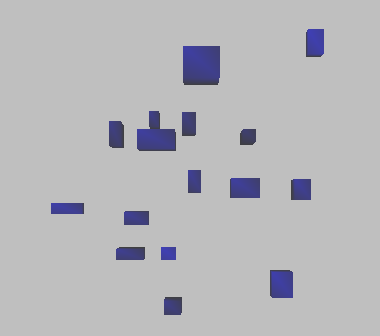
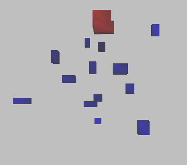

TestIntersectingBoxes.h
A collection of axis-aligned bounding boxes are randomly moving about in space. The boxes are blue initially. Whenever two boxes intersect, their colors are changed to red. The intersection testing uses time coherency to speed up the collision detection system.
|  |
|  |